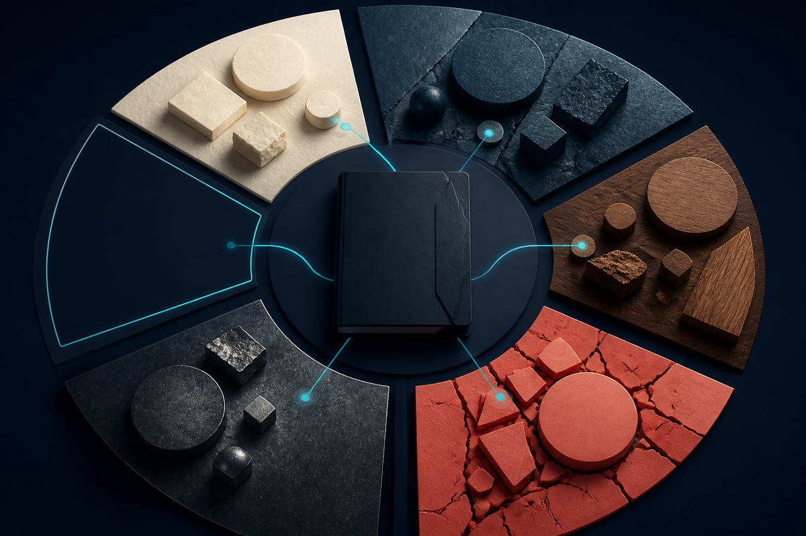

Keep the real inquiry
Preserve audience, decision use, scope, time horizon, exclusions, access, and evidence burden before retrieval begins.
Research answers · readable evidence
OMNARA investigates consequential questions and writes source-grounded reports. The Reading Room puts the answer beside its cited source records and retained notes, so you can inspect a passage, compare two sources, search the inquiry and return to your place.
Complete research skill and local Reading Room 1.5.0 | MIT License | Individual skill source, not a universal plugin claim

The product
For analysts, researchers, investigators, product and policy teams, and anyone who needs to understand what an answer rests on.
Preserve audience, decision use, scope, time horizon, exclusions, access, and evidence burden before retrieval begins.
Discovered is not inspected. Opened is not deeply read. A full evidence note earns that stronger state.
Claims, contradictions, gaps, citations, limitations, budgets, refresh triggers, and resume points travel with the prose.
Campaign loop
The research agent investigates. The Reading Room then helps you follow the answer back to the evidence that was actually retained.
Stabilize inquiry, use, scope, freshness, authority, and burden.
Define coverage loci, explanations, source ecosystems, and disconfirming questions.
Ledger candidates, deeply read the evidence-bearing subset, and write notes.
Build claim and contradiction ledgers; pursue decision-relevant gaps.
Check citation mechanics and semantic support separately, then hand off limits.
Inputs and outputs
Question, audience, decision use, scope, time horizon, required evidence, exclusions, access authority, budget, and deliverable.
Research brief, query/source/claim ledgers, evidence notes, coverage matrix, contradiction map, digest, report, audit dispositions, counts, limits, and resume point.
Honest boundaries
Omnara does not guarantee truth, exhaustive coverage, source access, fixed scale, semantic entailment, professional advice, or host activation. Local helpers check structure and citation mechanics; a capable reviewer must still judge evidence and claims.
Run Open.cmd on Windows or python3 workspace/open.py on macOS/Linux. Python 3.10+ is required. Return through the launcher; choose an existing inquiry, follow report citations to retained notes, compare sources and save a private offline reading copy. Room guide · Check current review · Worked research result.